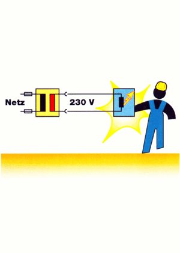

Schutztrennung
Bei der Schutztrennung wird ein Transformator eingesetzt, der einen zweiten isolierten Stromkreis aufbaut. Der Sekundärstromkreis darf nicht geerdet werden. Ortsveränderliche Trafos müssen schutzisoliert sein.


Bei der Schutztrennung wird ein Transformator eingesetzt, der einen zweiten isolierten Stromkreis aufbaut. Der Sekundärstromkreis darf nicht geerdet werden. Ortsveränderliche Trafos müssen schutzisoliert sein.